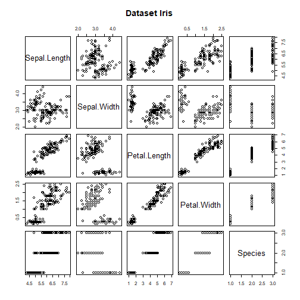
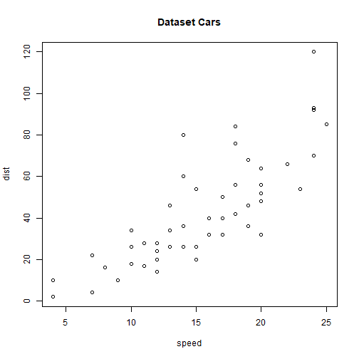
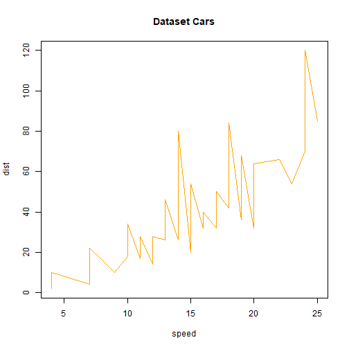
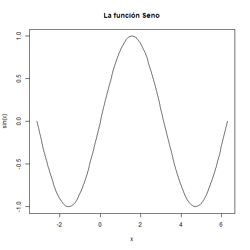
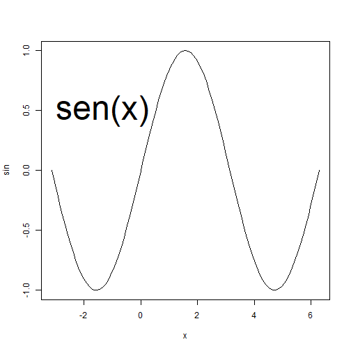
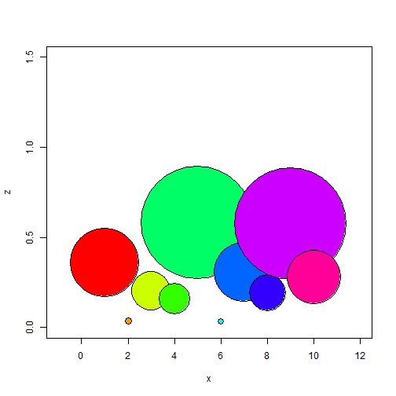
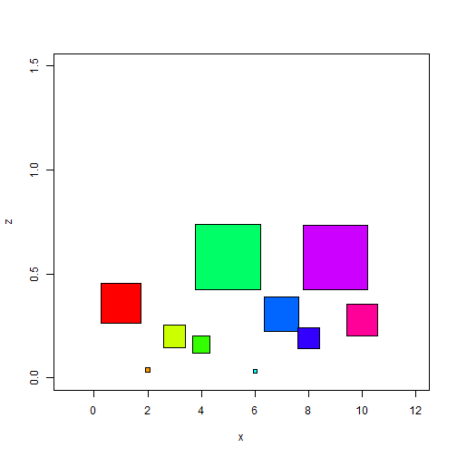

Plot, text y symbols
Plot
Es una función genérica que crea un gráfico en el dispositivo gráfico actual.
Su forma de uso es plot(x ...), donde x es uno o varios objetos. Con la ayuda de la función help podemos consultar información acerca del resto de parámetros.
help(plot)
plot(iris, main="Dataset Iris")

plot(cars, main="Dataset Cars")

Lanzamos el mismo gráfico anterior pero uniendo los puntos.
plot(cars, type="l", col="orange", main="Dataset Cars")

plot(sin, -pi, 2*pi, main="La función Seno", ylab="sin(x)", xlab="x")

Text
Esta función añade texto a un gráfico existente. Su sintaxis se puede volver a consultar con la orden help.
help(text)
Lanzamos la función Seno y añadimos el texto en la imagen.
plot(sin, -pi, 2*pi) text(-3,0.5, "sen(x)", col="black", cex=4, adj=0)

Symbols
Esta función permite dibujar círculos cuadrados, rectángulos, estrellas, termómetros y cajas en una posición determinada de un gráfico, indicando además el tamaño que deben tener.
n=10 x=1:n palette(rainbow(n)) z=runif(10) symbols(x,z,circles=z, xlim=c(-1,12), ylim=c(0,1.5), bg=1:n)

Dibujamos cuadrados en vez de círculos:
symbols(x,z,squares=z, xlim=c(-1,12), ylim=c(0,1.5), bg=1:n)
